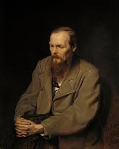

Fyodor Dostoevsky was a famous Russian novelist and philosopher. He is considered one of the greatest writers in Russian and world literature.

Fyodor Dostoevsky was born in 1821 in Moscow and passed away in 1881 in St. Petersburg. A turning point in his life was his arrest for participating in a political circle, followed by a mock execution and four years of hard labor in exile.
His main contribution to world culture was the creation of profound psychological novels, such as "Crime and Punishment" and "The Brothers Karamazov,"
which revolutionized literature by deeply exploring the human soul, questions of faith, and morality. Severe life hardships and his struggle with illness formed the foundation of his unique literary style and philosophical views.
Biography of Fyodor Dostoevsky
Dostoevsky's Books